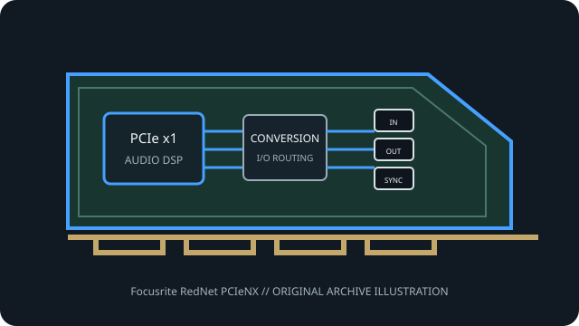

[ PROFESSIONAL AUDIO // PCIe ADD-IN ]
Focusrite RedNet PCIeNX
A current-generation RedNet PCIe Dante endpoint for immersive audio, post-production and high-channel-count studio systems.

MODEL SCOPE: Focusrite RedNet PCIeNX. High-channel-count Dante capture/playback card with 128×128 24-bit channels through 192 kHz and optional 256×256 upgrade. Confirm PCB/IS revision, accessories, slot wiring and current vendor driver before installation.
Model-specific specifications
| Model-specific SKU | Focusrite RedNet PCIeNX |
|---|---|
| Host interface / lanes | PCI Express add-in card; Focusrite does not publish a minimum wired lane count in the cited specification. It is also supported in a compatible Thunderbolt chassis. |
| Codec / conversion | Digital Dante/AES67 transport; no analog ADC/DAC or analog audio sockets are fitted. Connect to external networked converters. |
| Analog I/O | No analog audio inputs or outputs on the card. |
| Digital I/O / protocols | Two RJ45 Ethernet ports support switched or redundant network operation, Dante and AES67; SMPTE ST 2110 operation requires Dante Domain Manager. |
| Resolution / sample rates | 24-bit, 128×128 simultaneous channels at 44.1, 48, 88.2, 96, 176.4 or 192 kHz. Optional Dante Ready upgrade expands to 256×256 through 96 kHz. |
| Latency / monitoring | Focusrite describes ultra-low round-trip latency but does not publish a universal millisecond figure; Dante network design, sample rate and host buffer determine measured end-to-end delay. |
| Driver / OS compatibility | Multi-client ASIO and WDM on Windows; Core Audio on macOS. Focusrite lists Intel and Apple Silicon Mac compatibility; use the PCIeNX-specific current driver/download package. |
Compatibility & preservation
PCIeNX differs from the older PCIeR in host compatibility and channel-rate capabilities. Upgrade to 256×256 is optional; confirm network bandwidth, Dante licensing, clocking and host card fit.
- Photograph the card label, PCB revision, rear connectors and included breakout cables before service.
- Retain the exact working driver, firmware, operating-system version, clock and routing configuration.
- Confirm lane wiring, bracket clearance, channel map and external converter/network compatibility; connector fit alone is not a compatibility guarantee.
Manufacturer sources
- Focusrite RedNet PCIeNX — manufacturer product and specificationsManufacturer documentation for this model, driver family or revision.
- Focusrite RedNet PCIeNX — official downloadsManufacturer documentation for this model, driver family or revision.